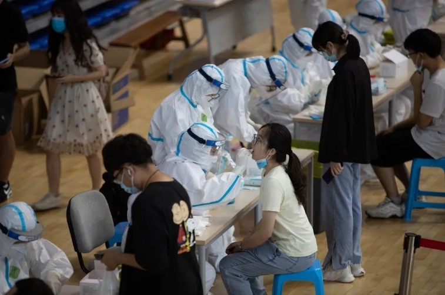
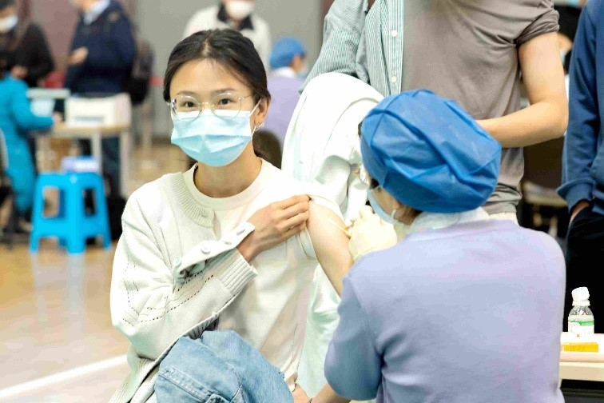
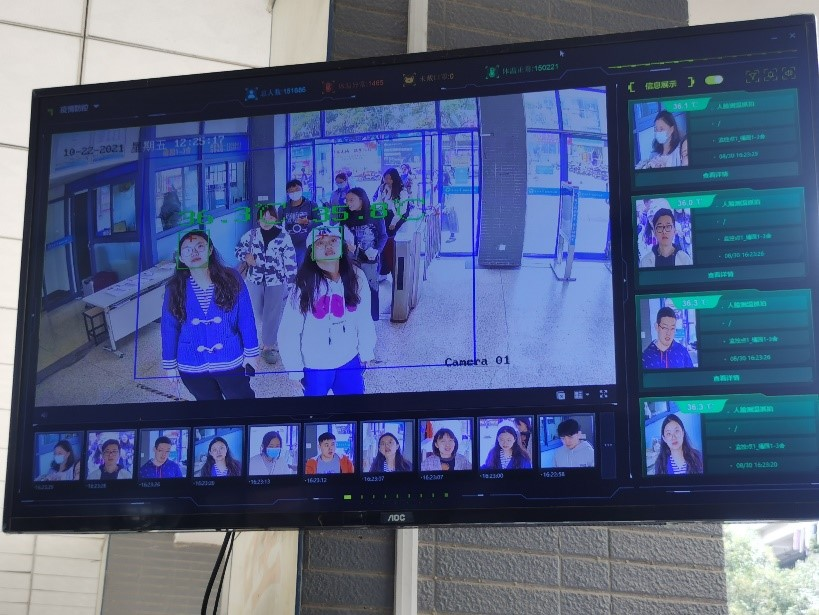
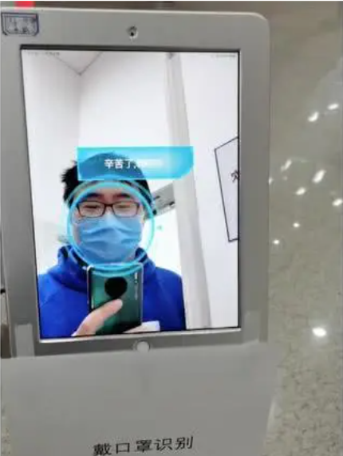

Methodologies
Traditional methods
Currently, to against the coronavirus pandemic, various epidemic prevention and control measures are taken in our nation, including conventional and high-tech methods. With the normalization of epidemic prevention, those traditional measures have been deeply integrated into our lives. The most typical one is wearing a mask, which is considered by experts to be the most effective way to prevent the spread of the coronavirus. Therefore, when taking public transportation or entering public places, we have to wear masks all the time.

Wearing masks (Source: https://www.vcg.com/creative/1270907909/)
Meanwhile, we must wash our hands frequently to keep them free from virus contamination. In addition, avoidance of holding large-scale gathering activities is necessary to prevent large-scale crowd infections. If it really needs to be held, the number of people should be strictly controlled and social distancing should be maintained. Since the beginning of the epidemic, our country has carried out grid management for each region and divided the corresponding risk level. When planning to travel across cities or are in a medium-to-high-risk area, we need to perform nucleic acid testing. This method can quickly screen out confirmed patients and asymptomatic infections to reduce the spread of the virus. The people who have been in contact with patients of COVID-19 must be quarantined for 14 days.
Nucleic acid testing (Source: https://www.seu.edu.cn)
Moreover, vaccines are the most effective weapon against the coronavirus pandemic. Therefore, countries, communities, and schools are also vigorously promoting vaccination in order to build an adequate immune barrier.
Vaccination injection (Source: https://news.seu.edu.cn/2021/0413/c5486a368068/page.htm/)
High-tech methods
Apart from the above traditional measures, high technology has also played an indispensable role in epidemic prevention and control. The most commonly used one is the itinerary code, which records the cities people have visited in the previous 14 days. It needs to be shown to the staff member when entering the large shopping malls or hospitals. This itinerary code can be used to infer whether people may have been exposed to coronavirus patients and the principle behind it is big data analysis. By analyzing the information communicated between our mobile phones and the base stations, our location can be obtained and recorded in this code.
Itinerary code
Since fever is a major symptom of the COVID-19, many places have introduced remote infrared temperature measurement systems to monitor the body temperature of people entering the place in real time. When the body temperature is too high, an alarm will be issued to screen for potential infected people. There is such an instrument at the gate of our dormitory area.
Remote infrared temperature measurement system
Another high-tech prevention and control measure is face recognition with masks. Entering and exiting many important places require identity verification, but taking off the masks for face recognition will greatly increase the risk of infection. Therefore, some domestic technology companies (e.g. Baidu) have improved the current face recognition algorithm in response to this challenge, so that the face wearing a mask can also be accurately recognized. At present, this achievement has been applied in actual scenes, such as Baidu Park, Beijing Metro and Wireless Valley (CNV).
Face recognition with masks (Source: https://new.qq.com/omn/20200320/20200320A0BT6Z00.html/)